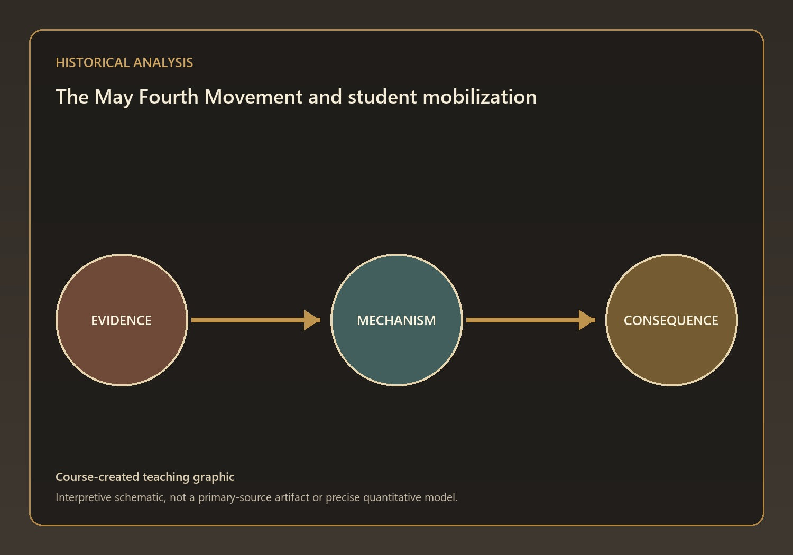
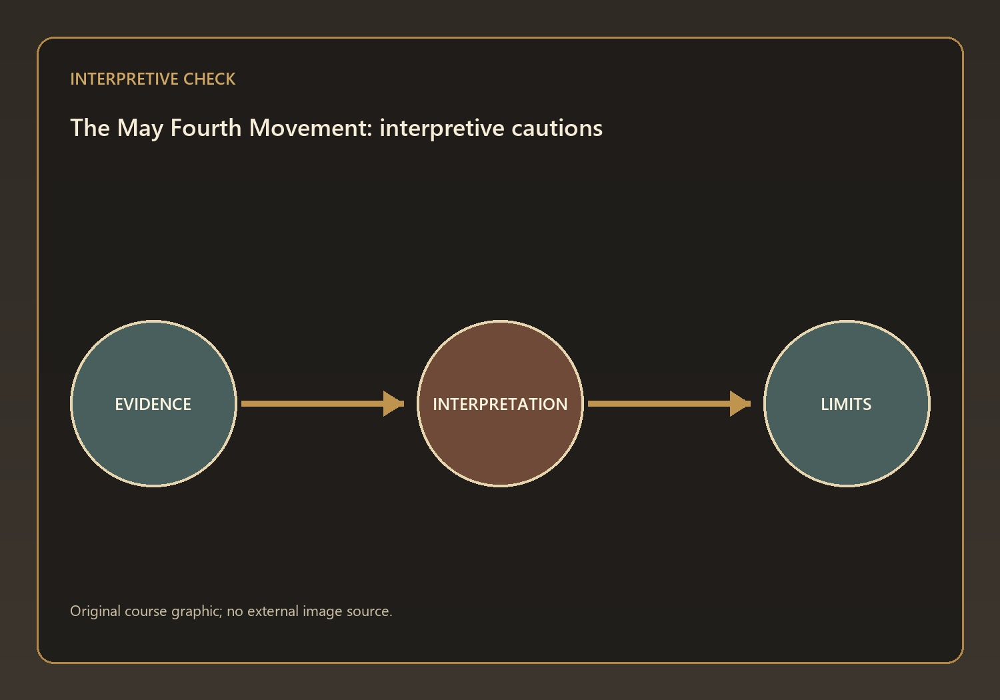
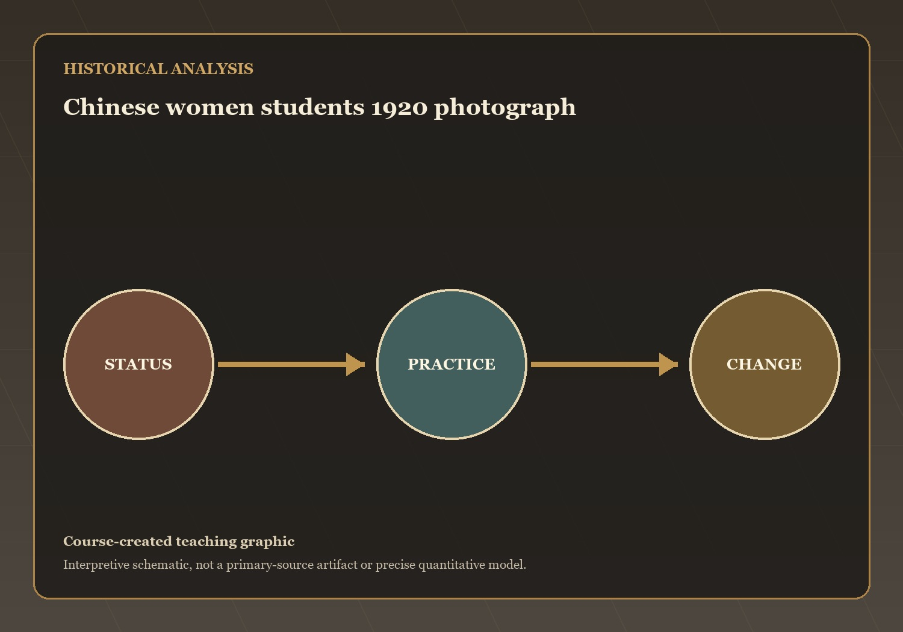
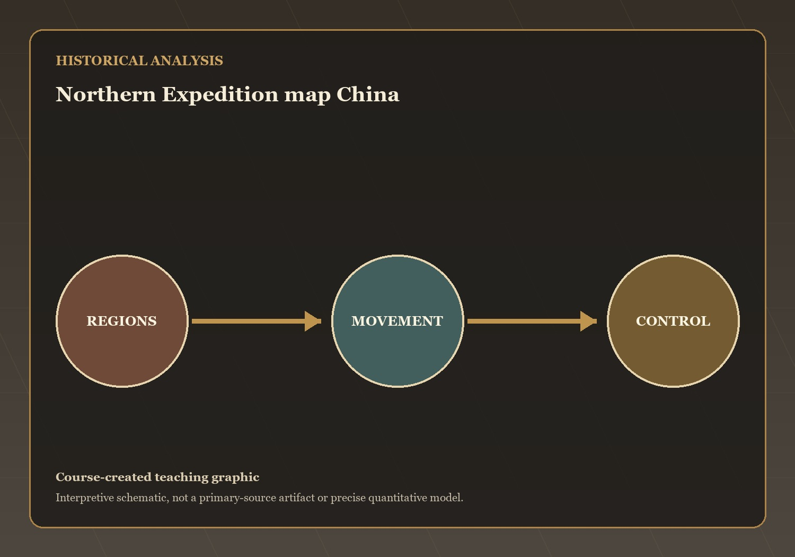

May Fourth, Women's Emancipation, and the United Front — HIST 270, Chapter 24, Lecture 3
Where We’re Going Today
Questions and Problems
- Q9 — The May Fourth Movement
- Q10 — The Women's Movement and Social Change
Mechanisms and Consequences
- Q11 — The First United Front and National Reunification
This lecture has treated how nationalism, gender reform, and party reorganization redirected the search for national reunification as a connected historical problem.…
Part 1
Q9 — evidence, mechanism, and consequence
The May Fourth Movement
- There was an explosion of popular protest

Visual evidence for Q9
Interpretive Stakes and Teaching Cautions
- A useful historiographical caution is to avoid a list of facts that never…
- The textbook necessarily compresses debate
- The lecture can preserve uncertainty by separating evidence from inference
- Official texts tell us what governments claimed

Visual evidence for Q9
⏸ Pause & Reflect
There was an explosion of popular protest
What mechanism best explains this outcome? State your answer to Q9 as a causal claim.
Part 2
Q10 — evidence, mechanism, and consequence
The Women's Movement and Social Change
- Women debated whether they could leave the old system and create their own…

Visual evidence for Q10
Interpretive Stakes and Teaching Cautions
- A useful historiographical caution is to avoid a progress-or-oppression binary that erases differences…
- The textbook necessarily compresses debate
- The lecture can preserve uncertainty by separating evidence from inference
- Official texts tell us what governments claimed

Visual evidence for Q10
⏸ Pause & Reflect
Women debated whether they could leave the old system and create their own identities
What mechanism best explains this outcome? State your answer to Q10 as a causal claim.
Part 3
Q11 — evidence, mechanism, and consequence
The First United Front and National Reunification
- They formed a united front

Visual evidence for Q11
Interpretive Stakes and Teaching Cautions
- A useful historiographical caution is to avoid a list of facts that never…
- The textbook necessarily compresses debate
- The lecture can preserve uncertainty by separating evidence from inference
- Official texts tell us what governments claimed

Visual evidence for Q11
⏸ Pause & Reflect
They formed a united front
What mechanism best explains this outcome? State your answer to Q11 as a causal claim.
Coming Up: From the United Front to a Peasant Revolution
The open question: which development in this lecture most changed the range of choices available to ordinary people, and is that change visible in…
From the United Front to a Peasant Revolution — the next stage of the course narrative.